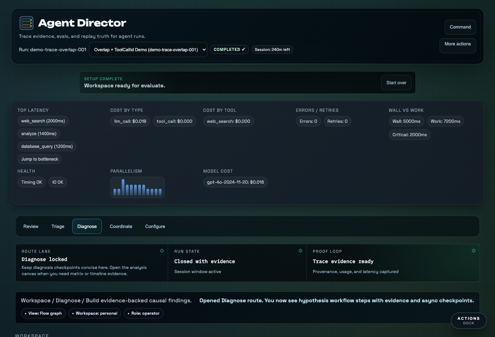
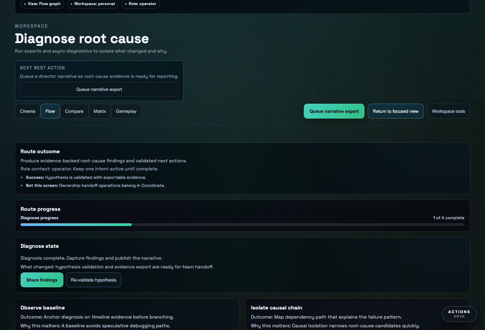

Teams get spans, tokens, retries, costs, screenshots, and guesses. What they need is a way to turn the run into evidence.
Agent Director ingests real agent traces, preserves provenance, and turns failures into a structured path from diagnosis to release gates.


The failed trace becomes a repeatable eval case. The next release can prove whether the behavior improved, regressed, or stayed ambiguous.